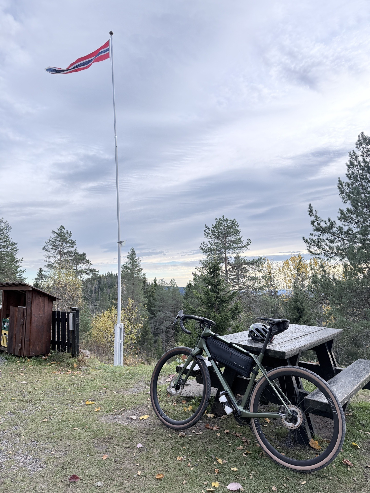

A practical guide to gravel bike rental in Oslo
Most visitors who want to cycle in Oslo end up on a city hire bike — the kind designed for cobbled squares and gentle waterfront paths. That is fine as far as it goes. But Oslo also borders one of the great urban forests in Europe, and to ride in that forest properly, you need a gravel bike. This guide explains how to rent one, what to look for, and exactly where to go once you have it.
The Nordmarka forest starts at the end of metro line 5, fifteen minutes from the city centre. Inside, it is 1,700 square kilometres of pine and birch, gravel roads, lakes and mountain cabins. The terrain is rolling rather than alpine — long climbs through the trees, ridgelines with views over the lakes below, descents that run fast and quiet through the pines.
A city hire bike is the wrong tool for all of this. The tyres are too narrow for the loose gravel, the geometry puts you in an upright position that makes descents unpredictable, and the gearing is designed for flat streets, not sustained forest climbing. You will struggle, tire out faster, and enjoy it less.
A gravel bike has wide, knobbled tyres that handle loose surfaces confidently. The geometry is relaxed enough to stay stable on descents and comfortable over a long day. The gearing covers everything from steep forest climbs to fast gravel roads. It is the bike the terrain was designed for — and the only reason most visitors don't ride one is that they didn't know they could rent one here.
We run two gravel bikes and two e-bikes as rentals — the same bikes we use on our guided tours.
An aluminium-frame gravel bike with disc brakes and forest-ready tyres. Dependable, correctly sized, and entirely capable of every gravel road in the Marka. If you want a reliable bike at a sensible price, this is it. Helmet included.
A carbon frame with carbon wheels, tubeless tyres and hydraulic disc brakes. Lighter, faster, and more forgiving on a long day in the saddle. If you ride a decent bike at home and don't want your rental to feel like a step down — this is the one. Helmet included.
Both bikes are checked and serviced between rentals. Tell us your height when you book and the right frame size will be ready.
We offer four pickup locations, all included in the price — choose whichever is easiest for where you're staying.
The best option if you're riding the Nordmarka. Sognsvann is the last stop on T-bane line 5 — fifteen minutes from central Oslo, right on the forest edge. You step off the metro, pick up your bike, and the gravel roads start immediately. No riding through traffic to reach the good part. This is where we start most of our guided tours.
The most convenient option if you're arriving by train, or if you want to include some city riding before heading into the forest. Oslo Central is well connected — from there you can ride north through Grünerløkka and Kjelsås to reach the Nordmarka in around thirty minutes.
A good northern option. Kjelsås is the end of tram line 11, opening straight into the Maridalen valley and the shores of Maridalsvannet — Oslo's largest lake. If you want a scenic, mostly car-free way into the eastern Marka, this is the pickup.
The western option, and the quiet one. Huseby is a two-minute walk from Montebello on T-bane line 3, and it puts you at the foot of Mærradalen — a green river valley most visitors never hear about. You follow Mærradalsbekken up through the woods to Bogstad: roughly six kilometres and a hundred metres of climbing, gravel nearly the whole way, with one rougher stretch near the top. From Bogstad you're at the gateway to Sørkedalen and the western Nordmarka. If you want forest without the Sognsvann crowds, start here.
Once you have the bike, here is what to ride. These are the routes we know best — the ones we take our own groups on.
Out along the lakeside, into the pines, a climb, a descent, and back. Good gravel throughout, gentle enough for anyone who rides occasionally. The right choice for a first taste of the Nordmarka — or for riders who want to see the forest without committing a full day. This is the route of our Oslo Gravel Short tour.
A proper loop that takes you deeper into the forest. Real climbing, quieter tracks, longer stretches between other people. You'll reach the kind of places that take most visitors an hour to get to by foot. This is the route of our Oslo Gravel Loop tour.
The classic Oslo forest route. Osloites have been riding this loop for generations — it has a name, a reputation and a waffle stop at Kikutstua cabin halfway round. Around 800 metres of climbing in total. Fast descents, remote stretches, the kind of distance that leaves you properly satisfied. Bring food and water, and budget a full day. This is the route of our Nordmarka Forest tour.
If you want to see the parts of the Nordmarka that even most Osloites have never reached — the remote lakes, the old logging roads, the sustained climbs — this is the route. Not for the faint-hearted, but genuinely extraordinary. Covered by our Epic Marka Endurance tour.
Both are good options. The question comes down to what kind of day you want.
Rent the gravel bike if you are a reasonably fit cyclist and want the full physical experience of the forest. The Nordmarka has real climbing — Ring 4 gains around 800 metres — but that is part of what makes it rewarding. You earn the descents and the views. The Premium Gravel in particular is a genuinely excellent bike that makes even a long day feel controlled.
Rent the e-bike if fitness is a concern, if you want to go further without fatigue, or if you are riding with people of different abilities. The motor flattens the climbs and lets you reach the deeper parts of the forest without it becoming a sufferfest. The Long Range E-Bike is the right choice for a full day out — the battery won't run out before you're ready to stop.
The helmet is included with every rental. Beyond that:
The Nordmarka forest is not signposted for visitors. The trails fork and multiply without obvious hierarchy, and it is genuinely easy to take the wrong branch and spend an hour finding your way back. Offline maps help considerably. But if you don't know the forest, the most efficient way to see the best of it on a first visit is with a guide — someone who knows which tracks to take and where to stop.
If that sounds appealing, our private guided tours cover every level from the two-hour short loop to the full-day Epic Marka. Hotel pickup, a local guide, and the bike are all included from NOK 890 per person.
Carbon and aluminium gravel bikes from NOK 899, plus e-bikes. Pickup at Sognsvann, Kjelsås, Huseby or Oslo Central Station included. Helmet included. We confirm availability within 24 hours.
See bikes and rentOslo Bike Tours rents carbon and aluminium gravel bikes from NOK 899, with pickup included at Sognsvann (end of metro line 5, right on the Nordmarka forest edge), Kjelsås, Huseby or Oslo Central Station. Helmet included. Book via the rental page and we confirm availability within 24 hours.
Yes — it's the right tool for the terrain. The Nordmarka is covered by hundreds of kilometres of gravel roads and forest tracks, too rough for a road bike and too open for a mountain bike. A gravel bike handles everything: efficient on the long climbs, stable on the loose descents. City hire bikes are entirely the wrong choice and make the forest harder and less enjoyable.
The Gravel (NOK 899 first day) has an aluminium frame with disc brakes — reliable and comfortable on every Nordmarka route. The Premium Gravel (NOK 1 399/day) has a carbon frame, carbon wheels with tubeless tyres and hydraulic disc brakes. Lighter, faster, more forgiving over a long day. If you ride a good bike at home, the Premium is the one that won't feel like a rental.
Rent the gravel bike if you are comfortable with cycling and want the full physical experience — the Nordmarka's climbs are part of what makes it rewarding. Rent the e-bike if fitness is a concern, if you want to go further without fatigue, or if you're riding with people of different abilities. Both are quality bikes; the difference is how much work the motor does.
One day covers everything from the short 13 km loop to the Ring 4 (45 km, 4–5 hours). For a full Epic Marka day (85 km), a single full day is the minimum. Multi-day rentals are available — include your dates in the enquiry form.
Water, food, a rain layer, a phone with offline maps downloaded (Maps.me or Komoot), and cash or card for the cabin stops. The helmet is included. Cycling shorts and gloves make a long day more comfortable but aren't essential for shorter rides.